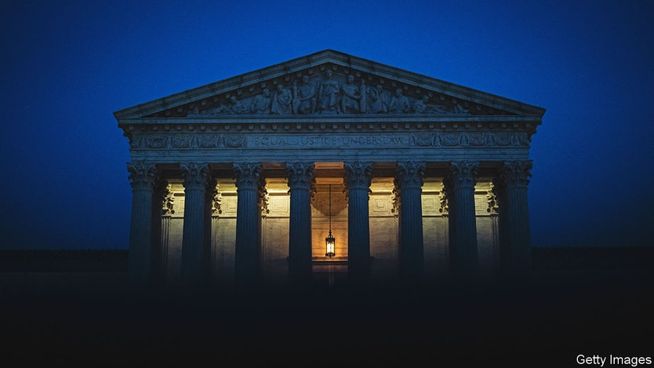

For You
Trending
Covid-19
News
Sports
Entertainment
Trending in Food
Regular Coffee Consumption Demonstrates Health Benefits
82.5k Tweets
NFL · Trending
Lamar Jackson Posts Impressive Yardage
33.2k Tweets
The Economist ✓
· Trending
What to expect from the new SCOTUS term

Twitter Policy · LIVE
Twitter Policy Changes - See How it Affects You

Fenway Opinion ✓
· Trending
Safe Bike Paths in Boston
Weather · Trending
How to Protect Yourself Against Inclement Weather this Winter
8401 Tweets